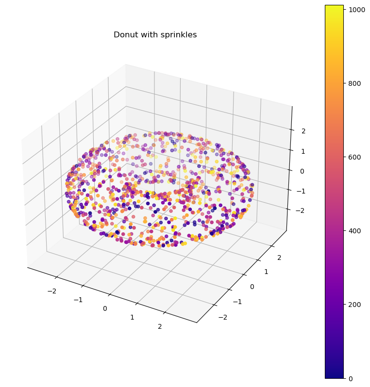
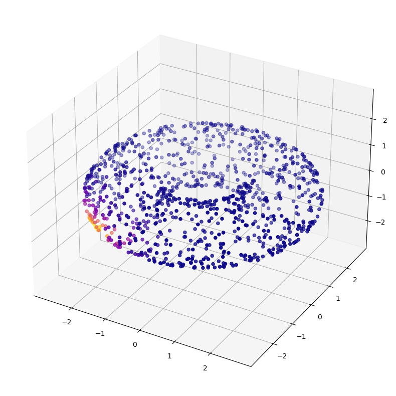
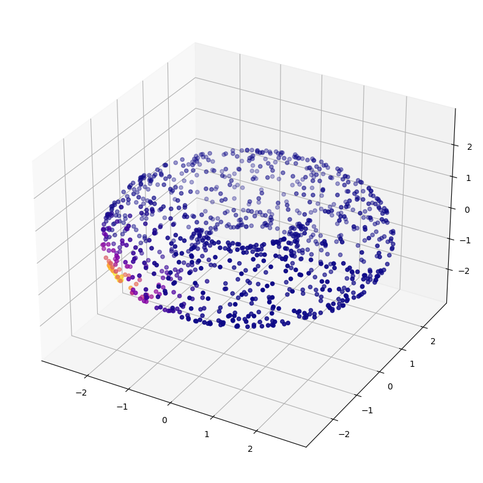

Given input12 X returns a diffusion matrix P, as an numpy ndarray. X is a numpy array of size n x d kernel_type is a string, either “fixed” or “adaptive” or “anisotropic” or “adaptive anisotropic” sigma is the non-adaptive gaussian kernel parameter k is the adaptive kernel parameter Returns: P is a numpy array of size n x n that is the diffusion matrix
# Get the distance to the kth closest neighbordistance_to_k_neighbor = np.partition(D,2)[:,2] # argpartition is more efficient than argsort ([python - How to get indices of top-K values from a numpy array - Stack Overflow](https://stackoverflow.com/questions/65038206/how-to-get-indices-of-top-k-values-from-a-numpy-array))distance_to_k_neighbor
plot_3d(X,list(range(len(X))),"Donut with sprinkles",colorbar =True)

Hurrah! Our donut is intact, and our plotting function is working as expected.
Now let’s visualize some diffusions, under various kernels.
The Adaptive Kernel
Here we have the adaptive kernel born Diffusion matrix, and we visualize the diffusion centered on the point (0,-3,0), which (from the view of the plot below), should be on the outer rim of the torus, facing us directly.
P = DiffusionMatrix(X,kernel_type="adaptive",k=20)
dist = P[0]plot_3d(X,dist)

The Adaptive Anisotropic Kernel
Now we’ll add one more round of density normalization with the “adaptive anisotropic” kernel: \[ W_{a} = D^{-1} W D^{-1} \] Where D is the matrix whose diagonals are the rowsums of W.
P = DiffusionMatrix(X,kernel_type="adaptive anisotropic",k=20)
dist = P[0]plot_3d(X,dist)

It looks much the same, as expected. Ideally, this kernel will combat density related differences in the curvature, by equalizing the density.